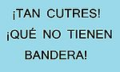
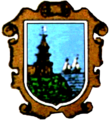

Finisterre
 De: La Frikipedia, la enciclopedia extremadamente seria.
De: La Frikipedia, la enciclopedia extremadamente seria.
Finisterre, no confundir con el pueblo francés que también tiene el mismo nombre "Finistère" ¡Ah, esos perros gabachos! Los ghalleghos puros lo llaman Fisterra y los gilipollas turistas desinformados realizan una curiosa fusión del nombre creando: Finisterra. Se encuentra en la provincia de la Coruña, en la comunidad de Jalisia.
| De la serie pueblos del mundo:
|
| Finisterre
|
| 
|

|
| (Bandera)
|
(Escudo de armas)
|
|
| Topónimo oficial
|
Finisterra
|
| País
|
Espiña
|
| Código postal
|
¿Para que quieres saberlo? ¿eh?
|
| Superficie
|
No se sabe, no sale en el mapa del tiempo de TVE.
|
| Altitud
|
Desgraciadamente, aún sobre el nivel del mar.
|
| Distancia
|
En el fin del mundo, no lo suficientemente lejos.
|
| Fundación
|
Fragasaurio.
|
| Población
|
Peregrinos, fachas y drogados.
|
| Gentilicio
|
fisterrans
|
| Alcalde
|
José Manuel Biólogo-Traba Fernández
|
| Fisterra es pasable! muerte a Cee, Corcubión y demás pueblos!
|
La fantástica historia de Finisterre.
La fundación de Finisterre proviene de tiempo inmemorial, al igual que toda Jalisia por obra y gracia de Fragasaurio, circa 2.000.000.000.000.000.000.000.001 años, pero que conste que no estamos seguros. Los celtas solían follar ir de marcha por esta zona, ya que al estar apartada de todo lo conocido era ideal para sus plantaciones de sustancias alucinogenas flores super secretas y que no querían compartir con sus vecinos los iberos. ¡Que malvados!
Las primeras noticias que tenemos son de un grupo de exploración gomano romano, capitaneado por Pijus Magnificus y que al llegar al cabo señalaron: "¡Coñum! ¡Cuánto mar! ¿Qué hay al otro lado?". A lo que el viejo carallo 29!" -y este es el origen de la expresión carallo 29-. Los gomanos romanos habían ido a cabeza: "Pues como es el fin de la tierra... pues fin de la tierra... anda Marco Julius pasame otro porro de esos". Hoy en día siguen llegando peregrinos hasta Finisterre, no entienden que el fin de la peregrinación es Santiago, se ve que la tradicción gomana romana sigue vigente: la de colocarse tanto que ni siquiera ven por donde caminan... y menos mal que cuando llegan al faro ya solo hay agua que si no América habría sido descubierta por un peregrino colocado.
Y llegaron los visigordos, entre los que destacan: Alarico, Witerico y Chisdanvinta. Los visigordos trajeron con ellos la religión cristiana que impusieron a golpe de piedra, produciendo en los fisterrans un exagerado sentimiento religioso en los más mayores y una clara devoción de estos por las piedras; desde entonces hasta la actualidad no ha habido grandes cambios el nivel socio-cultural (que fino el vocablo!) sigue siendo peor el mismo que el de tiempos medievales.
Población.
mierda mol!!
- La población esta compuesta por un 60% viejos y viejas
contentos cabreados con el mundo y todos los que lo componen, son capaces de llamar a la policia local por estar gritando en un parque... y también son los que espian desde las ventanas lo que haces en la calle, da igual la hora que sea siempre habrá un viejo mirando como llegas a casa para contarselo al día siguiente a tu madre. Son así de adorables! Otras de sus aficiones son ir a caminar al Paseo Marítimo, ir a las comidas que organiza el PP para comprar votos y bailar hasta las 2:00 de la mañana todos los domingos en la Casa del Mar, (al ritmo de Extremoduro, Black Sabbath o AC/DC xD) y tu tienes que aguantar al Paquito Chocolatero de los cojones hasta esas horas... algún día cumplire mi sueño y les mataré sigilosamente cambiaré el CD.
- 20% jóvenes camela.. o lo que es peor escuchando reggeaton, esta subespecie esta escasamente desarrollada esto se refleja en que pasean con sus coches por todo el pueblo gastando gasolina para no ir a un lugar en concreto, solo por el gusto de dar vueltas. Además estamos hablando de un pueblo donde la distancia más larga esta a unos 10 minutos. La falta de ejercicio de estos canis
atunneros hará que digievolucionen o pokemonicen (lo que suceda primero!) en gordos y terminen aplastando el pueblo.
- 4% está formado por una crew de hipjoteros, también conocidos como etarras aunque no hablan de nacionalismo (no saben lo que significan!). Sus temas favoritos son: el alcohol, drogas y sexo, ya que beben alcohol para olvidar que no tienen drogas ni sexo, esto es porque se gastan la pasta en ropa ganstá por lo que no les llega para drogas y mucho menos para putas! Suelen vivir en la calle como tipos duros que son, pero a las 22:00 se van corriendo para cas
ita a cenar con su mamá. El hecho de que sea un grupo de chicos interesados por los trapitos, siempre dispuestos a desnudarse para enseñar sus musculos a sus amantes amigos... da que pensar sobre su orientación sexual. Según ellos viven "in the ghetto", como se ve son también admiradores del príncipe gitano.
- Pseudo-punkis, de estos solo hay un 1.7% porque ellos mismos ni siquiera saben lo que son... son supuestos antisistema que van creyendose los mejores por retar al mundo en sus cruzadas imaginarias, grafiteando el pueblecito (ojalá se compren un cuadernillo de caligrafía!), sus actos pueden considerarse como una reacción ante la política local, aunque si les preguntas a ellos te diran que es por puro aburrimiento. Al parecer también son fans de Nirvana y del movimiento grunge... lo que yo decía "ni siquiera saben lo que son".
- Los peregrinos forman también parte de la población, aunque como su número varia se desconoce el porcentaje que ocupan pero es bastante. Son los mejores peregrinos de todos los que llegan hasta aquí, los que tienen más sentido común finalizan el camino en Santiago, pero los
valientes que llegan a Finisterre búscando aquellas plantaciones celtas de las que hablaban los cronistas gomanos romanos, al no haber tierra más allá suelen apalancarse en el albergue pero como este es demasiado pequeño para tamaño contingente de colgados caminantes, se han creado albergues privados (bonita forma de llamarlo! cualquier cosa con tal de hacer negocio!), muchos obtan por dormir en el parque, en el polideportivo (sí, hay uno!) o en cualquier lugar que se tercie... Una vez finalizado el camino, como ya no tienen nada que hacer se dedican a vender pulseritas, aporrear tocar la guitarra o buscar la felicidad; todo ello mientras se drogan, son expertos en petar las colas del super y preguntarte cada 2 x 3 (como si fueras un puto puesto de información turistico) donde queda el super.
Personajes miticerrímos.
- Manolo chunai... o to night (para los cultos que saben francés): Maestro percebeiro, conocido por ser un gran filosofo fisterrán y teorizar sobre la relaciones afectivas entre hermanos, su hermano el legendario: Simon Light, o así decía llamarse él. Su frase más conocida es: "Eu donche unha tallada de pulpo, e ti dasme unha pataca... esto nun e di irmans, esto e de fillos di puta." Imitador cutre de este gran filosofo.
- Piloto: yonki que todo pueblo tiene, conocido por su estilo a lo Kurt Cobain y la jauría de perros de los que va rodeado. Si dejas cualquier cosa descuidada durante cualquier momento, dala por perdida! Es conocida la anecdota en la que Piloto tras una entrevista con el alcade en el Ayuntamiento, se llevó una de las sillas. Sus declaraciones tras el robo fueron: "La silla parecía que era buena, quizás podían darme 1/2 gramo por ella".
- Abelardo padre: Conocido por preguntarte si tienes lentejas para comer, es el padre del otro Abelardo: Abelardo junior.
- Tarzán: Para encontrarlo solo tienes que moverte en dirección de la música mejicana, es el Stephen Hawking de Finisterre, aunque en vez de ir pegado a un ordenador, él siempre va pegado a su radiocasete escuchando rancheras a todo volumen. No tengo ni idea de donde viene el mote, también es todo un misterio saber donde compra los casetes (hoy desaparecidos!). Sociologos apuntan a que se pasará al CD proximamente.
- Explanada: Su nombre se debe al pedazo frente que tiene este hombre, esto no es sinónimo de inteligencia (tener más de dos dedos de frente, él tiene cuatro o más). Es hermano de Rocky y ambos son hijos de Crespo ¡Qué despropósito de familia!
- Rocky: El mote se debe a su gran belleza y su increible parecido con Silvester Stallone. Gran conocido por todos los bañistas que van a la playa del Almacén y el Cabello, ya que vive en verano en uno de los bancos de piedra -el cual a quedado teñido de un color negro- cercano a la fuente y situado en la zona alta de la playa, supongo que para tener las mejores vistas de las viejecitas que chapotean en la playa del Almacén.
- El payaso Nicólas: No es un insulto, es de profesión payaso. Dudo que trabaje mucho en la animación infantil, ya que solo lo contratarían padres que quieran traumatizar a sus hijos de por vida. Es mítico en este pueblo por vivir de las conchas que lleva en un carrito de la compra y sus múltiples bolsas de las que siempre va cargado, debe sentir un gran cariño hacia ellas... Mal pensados! Hace figuritas con ellas como tortugas o árboles. No se le conoce vicios ilegales, hay quien cree que tiene una millonada en su casa, resultado de su gran éxito como empresario.
- El tío del contador del agua: Es un peregrino que tras terminar el camino de Santiago se quedó en Finisterre, lugar donde ha encontrado la felicidad. Es conocido sus dibujos a lo largo del pueblo, por eso el alcalde le concedió para dormir el contador del agua; todo un acto de generosidad y de que pretende imponer el estado de bienestar en todo el pueblo al dejar vagar libremente a todos los locos. Como peregrino que es no sabemos nada acerca de su pasado.
Amigos.
Fisterrán matando con la mirada a un muxian.
Fisterrán recitando el abecedario.
Enemigos.
Fisterrán guiñandole un ojo a un peregrino.
Cultura.
La sabiduría del pueblo gallego, más que milenaria millonaria -porque son millones y no miles los años que han transcurrido desde los dulces tiempos de Pangea que todavía algunos viejos petrucios recuerdan-, es la causa de la extraordinaria riqueza folclórica de esta tierra, y de la sutileza de sus Kant? ¿Bush? Qué sería de las grandes figuras de la Metafísica sin los aportes del Finis Terrae galiciano.
Hablando de Cultura, si quieres hacer aportaciones adelante! si no te gusta jodete no borres, usa la página de discusión.
Acontecimientos más importantes.
- Entroido de Fisterra: Se caracteriza porque, además de que las comparsas cantan las tradicionales canciones de entroido, interpretan además elaboradas parodias teatrales que demuestran el espíritu festivo de los finisterrans cuando estan sobrios. Además, los textos representados suelen meterse con la política municipal y estatal, lo cual es parte de la gracia de esta celebración.
- Semana Santa de Finisterre/Festas do Cristo: Sin duda la fiesta grande de Finisterre. Se caracteriza porque la mayor parte de los actos son representaciones realizadas por los propios fisterráns
de carne y hueso, todos sabemos que están compuestos en un 90% de alcohol.
- Festa da praia: Se celebra en la Playa de Langosteira el último fin de semana de julio. Antaño era un momento de reunión familiar: los fisterráns iban a comer a la playa y se celebraba misa allí. Desde hace unos años, varias asociaciones culturales como Costa da Vida o Son do Ar la han organizado pensado más en la gente joven, con actividades de otro tipo (discotecas móviles, puestos de comida rápida, etc). El objetivo de esta fiesta es ir ese fin de semana de acampada a
follar y emborracharse pasarlo bien con tus amigos.
- Festa do Longueirón: Es una fiesta gastronómica, en la Playa de la Ribeira, donde la gente va a bañarse esos dos dias ya que el resto del verano no va nadie porque esta llena de
mierda cristales y restos de fuel de los barcos del puerto, además se encuentra casi en pleno centro del pueblo. En varias casetas situadas alrededor de esta playa los turistas y fisterráns se emborrachan degustan el famoso longueirón, mientras una orquesta desconocida interpreta temas aún peores. Se celebra el primer fin de semana de agosto.
- Festa Folk... na Fin do Camiño: Celebrada desde hace diez años por la Asociación Cultural e Xuvenial Anchoa, tiene como objetivo reclamar una mayor atención hacia el hecho de que Fisterra es el Fin del Camino de estrella galicia. Participa en esta fiesta el grupo fisterran "A Crux de Baixar".
- Fiestas patronales y de Nuestra Señora del Carmen: Se celebra los días 8, 9 y 10 de septiembre, aunque en los últimos años ha habido polémica sobre si debería cambiarse al mes de agosto que es cuando el resto de Espiña celebra la Fiesta del Carmen.
- Mi cumpleaños: Resumen de todas las fiestas anteriores.
Lugares emblemáticos.
- Castillo de San Carlos: Fortificación defensiva mandada construir en época del rey Carlos III de Espiña para defender la costa de los ataques de los barcos enemigos (Consultar lista de enemigos). Fue convertirlo en el Museo de la Pesca, el cual fue inaugurado en el 2006. En este Museo se muestra la evolución de la pesca a través del tiempo en cuanto a embarcaciones y aparejos, las costumbres de la gente marinera y los naufragios que se han producido en esta costa, todo ello muy
coñazo interesante. Además para entrar y visitar ese cutre museo hay que pagar 1 leuro. Antes era el picadero oficial lugar romántico por excelencia.
- fumados!! Están empeñados en ponerle
faldas faldones de vistosos colores tejidas por las viejecillas del pueblo. La iglesia se encuentra en el quinto pino, una gran caminata y una empinada cuesta son los obstaculos a superar para llegar.
- Capilla del Buensuceso: El otro lugar de culto y adoración de los fanáticos religiosos de Finisterre, con una gran escalera de piedra. Lo más divertido es situarse cerca los domingos para ver a las viejas con sus tacones
abrirse la cabeza caerse al bajar las escaleras.
- Parque: Hay sólo dos en este pueblo, uno cercano a la playa y otro al lado del cementerio. Al parecer se propusieron crear estos dos parques lo más alejados posibles de la gente y en los
peores mejores lugares. El parque que desata mi curiosidad es el que esta al lado del cementerio, utilizado para hacer botellón cerca de los muertos, plan ideal! es interesante ver a los borrachos al salir del parque e ir hacia su casa rodando cuesta a bajo.
- Faro de Finisterre: El faro guía a los barcos en su navegación por estas aguas peligrosas por los temporales que se producen y los bajos o arrecifes que existen y pueden causar el naufragio de las embarcaciones, en la antigüedad los fisterráns apagaban el faro aposta para que los barcos cocharan y saquearlos,
pero que hijoputas. Este es el lugar preferido para las parejitas que van en sus coches a follar de noche ver la puesta de sol. En cambio, los peregrinos van hasta allí a quemar las ropas, hacer orgias bañarse en el mar y comprar la concha de vieira en alguno de los puestos hippies que hay allí.
- Monumento al Emigrante y el Ancla del Barco Casón: Objetivos de todas las fotos de los
guiris turistas.
- Parada de autobuses: Lugar de apalancamiento por excelencia cuando estás cansado de dar vueltas y de aparcamiento cuando no hay buses, dispone de unas vistas magnificas de la calle y de todo el que pasa. Esta compuesto por tres pilares y un tejado (no había para paredes!), tiene tres bancos de piedra de la colección "fisterra free style"; es decir bancos de piedra sin respaldo, hechos para la
mínima comodidad. Otra de sus ventajas es que se encuentra cerca del kiosco, para los momentos de gula... hay que cruzar la carretera, arriesgando en ello la vida... lo que hay que hacer para conseguir esa droga legales: Benditas gominolas!
- Cementerio del Fin de la Tierra: Es una obra
maestra del arquitecto César Portelaque está todavía sin acabar pero, sin embargo, ya ha recibido numerosos premios de arquitectura. Consiste en un conjunto de cubos que poco se parece a un cementerio, recibe las críticas de los vecinos que prefieren tirar sus cuerpos al monte que ir a enterrarse allí, a los peregrinos les encanta ya que utilizan los cubos como albergue improvisado. Elemento "haciendo parkour" en el cementerio de Finisterre.
- Grupo escolar Mar de Fora: Ahí fui yo... que etapa de mi infancia más traumática! Colegio público al cual han asistido los mayores macarras del pueblo. Los profesores antes vivian en el mismo colegio, ahora las cosas son distintas es una granja-escuela como demuestra el invernadero en pleno patio del recreo, donde obligan a los niños a plantar tomates para venderlos el martes en la plaza. Prisión amurallada en la que por la noche se cuelan los
crios tíos gays guais a nada productivo, supongo que deben sentir morriña del colegio y por eso van por la noche a estudiar... a qué si no?
- Colegio nuestra Señora del Carmen: Colegio semi-concertado, aunque realmente sirve de residencia de ancianos y orfanato a ratos. Todo un ejemplo de como conseguir las máximas ayudas por parte de la Xunta de Galicia. En este colegio van crios desde infantil hasta la E.S.O. no hay Bachillerato ya que los alumnos les cuesta acabar la E.S.O. a duras penas.
- I.E.S Fin do Camiño: Instituto público que educa a
las bestias pardas jóvenes de la E.S.O. ya expliqué antes la razón de porque no hay Bachillerato. Se encuentra lo más alejado posible de los estudiantes, tienen la esperanza de que no vayan a clase. Es curioso que en un pueblo tan pequeño construyan lugares públicos tan alejados de los pueblerinos... Para llegar es necesario cruzar fosos, matar dragones y salvar gatitos indefensos , en realidad es aún peor hay que conseguir sortear las piedras del camino de tierra embarrado a la luz de las linternas ya que no hay alumbrado. El nombre es muy original y responde a la enfermiza costumbre de poner como sobrenombre "fin del camino" o "fin de la tierra" a todo lugar público con el fin de atraer más peregrinos... patético, pero cierto.
- Lonja Turística: También conocida como la estrella de la muerte de Dark vader, lonja futurista de color azul metalico. Es el lugar favorito de reunión de los peces y de noche es el aparcamiento del pueblo. Al igual que el castillo para entrar es necesario pagar la cuota de 1 leuro, a no ser que seas
fisterrán marinero.
Sabías que...
- ...Fisterra es un pueblecito alegre?
- ...el mundo era más feliz
facha cuando fragasaurio reinaba?
- ...8 de cada 10 fisterrans desean irse de Fisterra?
- ...los otros 2 de cada 10 estan en un "viaje" permanente?
- ...jalisia está en Espiña?
- ...yo no soy de fisterra pero paso por allí de vez en cuando?
- ...Llamazares no es bin laden?
- ...un fisterrán rastreará tu dirección IP y te matará por haber leido este articulo?
- ...un fisterrán no sabe usar un ordenador?
- ...que frase anterior es verdadera, pero esta es falsa?
Enlaces externos.
Trailer de una cutre película sobre Finisterre.
Mago de Öz los culpables del término Finisterra.
Blog de alguien que se entretiene con las noticias sobre este pueblo.
Autor(es):
- Krusher
- ArreKarallo
- Dark temptation
- Kevrochi
- Acceber
- Genericool
- Ruben insua traba
- Nomedalagana
- Carmen López
- Antonio do Chico
Frikipedia 2005-2016, Licencia
GFDL 1.2 - Extraído por FrikiLeaks